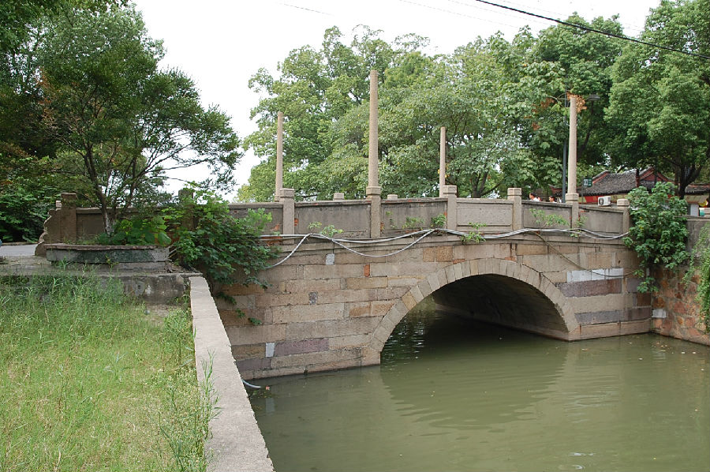

嘉兴市文物保护网 · 市级文物保护点 · 2020-11-09 · 原文

大盐仓桥位于嘉兴市南湖区南湖街道南湖社区南湖路，南北向跨盐仓河，连接南湖路，是南湖边上的一座单孔石拱桥，因附近有盐仓而得名，桥始建年代不详，桥全长20米，宽6.9米。桥拱由条石纵联并列分节砌筑，东西两侧各有望柱10根，当中四根望柱上立有灯柱，桥面用柏油铺平。桥额刻有：“大盐仓桥”和“一九五九年重建”，桥身无纹饰。大盐仓桥在嘉兴有一定知名度，造型别致，具有一定历史和科学价值。2010年公布为嘉兴市文物保护点。